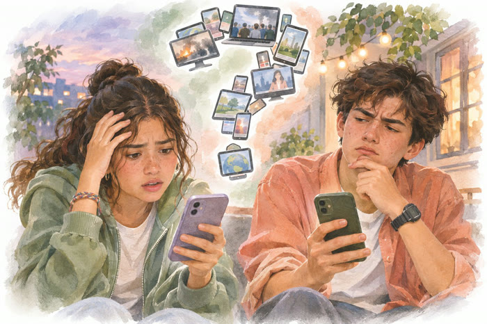

Listen to the text
Speed:

A phone is like a knife. You can cut bread with it, and you can cut your finger. Here are two true-to-life stories about the same small screen. Story one. Three hours that disappeared. Markiian, 15, was a good student until last winter. Then he discovered short videos. "I only wanted to check one message," he says. "Then I began to scroll. One video was ten seconds long, the next was fifteen. I lost track of time. When I looked up, it was two o'clock in the morning." It happened again and again. He stopped reading and gave up basketball. He fell asleep at lessons. He even began to text during dinner, although nobody at the table was allowed to. His marks went down, and he became nervous and rude. "It was a real screen addiction," says his mother. "I didn't want to supervise him like a small child, but he was putting his health at risk." They agreed on rules together: no phone after ten in the evening and no phone in the bedroom. "The first week was terrible," Markiian admits. "Now I sleep eight hours, and I am back in the team." Story two. One post that built a house. In the autumn of the same year a hurricane destroyed dozens of houses in a small town on the coast of another country. Among the victims was a family with four children. Sixteen-year-old Elina saw their photo in the news. She couldn't stop thinking about them. Elina is not an activist, and she had never organised anything. But that evening she wrote a post: "Let's help one family. If a thousand people give the price of one cup of coffee, they will have a roof before winter." She posted it at nine. By the morning it had been shared four thousand times. Money came from eleven countries. A building company offered materials. A movement called "One Roof" was born, and it has since helped orphans, old people and families of patients with cancer. "I used the same apps as everybody," says Elina. "I just used them for something else." Two teenagers, one kind of screen. The phone didn't decide what to do. They did.
Tap any sentence to hear it again.
Сподобалось? На сайті ще більше матеріалів для вчителів!
Reader, презентації, ігри, діагностичні та контрольні роботи до підручників 1-11 класів.
Перейти на сайт materials.allaenglish.com